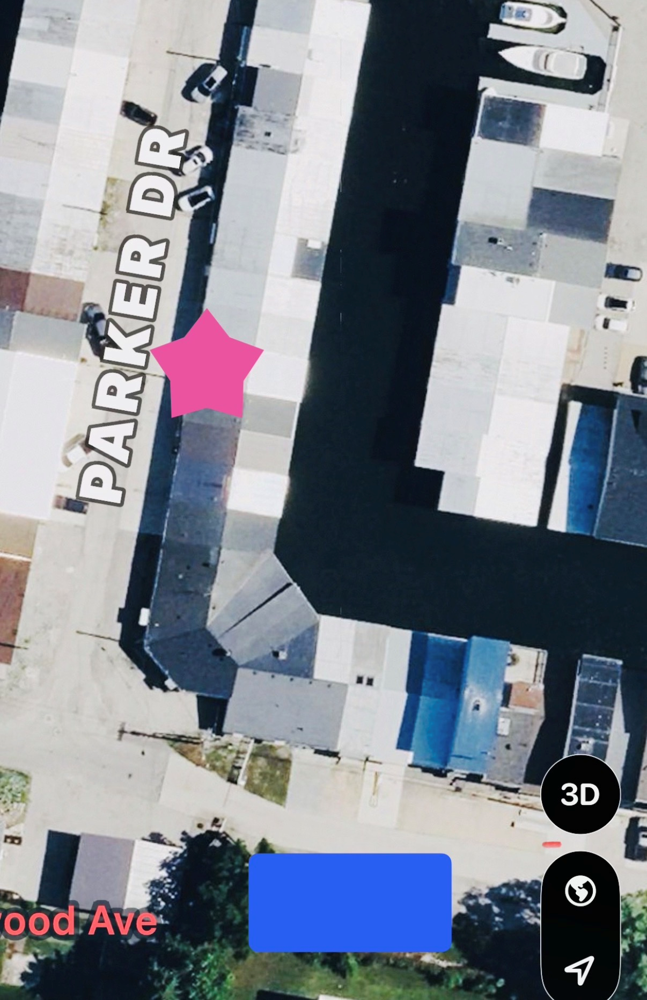

The Plan
We'll leave from George's Boathouse and cruise across Lake Erie for a quick summer evening escape to Kelley's Island.
Most likely we'll keep it simple and stay around downtown Kelley’s Island, grab a drink, enjoy a little island life, and head back before dark.
Schedule
- Date: Wednesday, June 10, 2026
- Departure: 6:00 PM
- Meet at: George's Boathouse
- Address: 444 Parker Drive
Fleet Manifest
- Captain George: Primary Vessel — 6 Dudes + Captain
- Marsh Madness: Captain Bill — backup fleet option
- Mercken Kraken: Captain Jonathan — backup fleet option
If interest grows, additional boats may be added.
Mission Plan
- Cruise across Lake Erie
- Explore downtown Kelley’s Island
- Grab a drink and enjoy some island life
- Optional side quests if time allows
- Return before dark
Parking & Arrival
Park in the designated grass area near George’s Boathouse.

Gate code and final arrival details will be shared with confirmed Dudes.
Weather & Timing
This adventure is weather permitting. Lake Erie makes the final call.
George wants to be back before dark, so this is more of a quick summer adventure than an all-night expedition.
Join Us
Space on the first boat is limited, so let Greg know if you're in.
Chance of good stories:
High
Chance someone wants to buy a boat afterward:
Very High